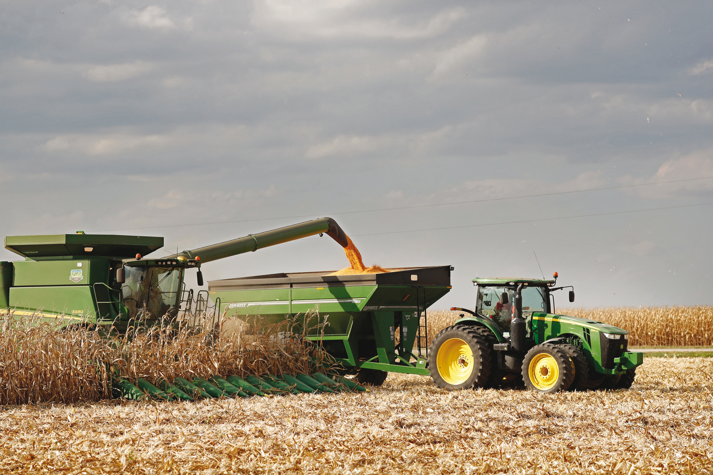
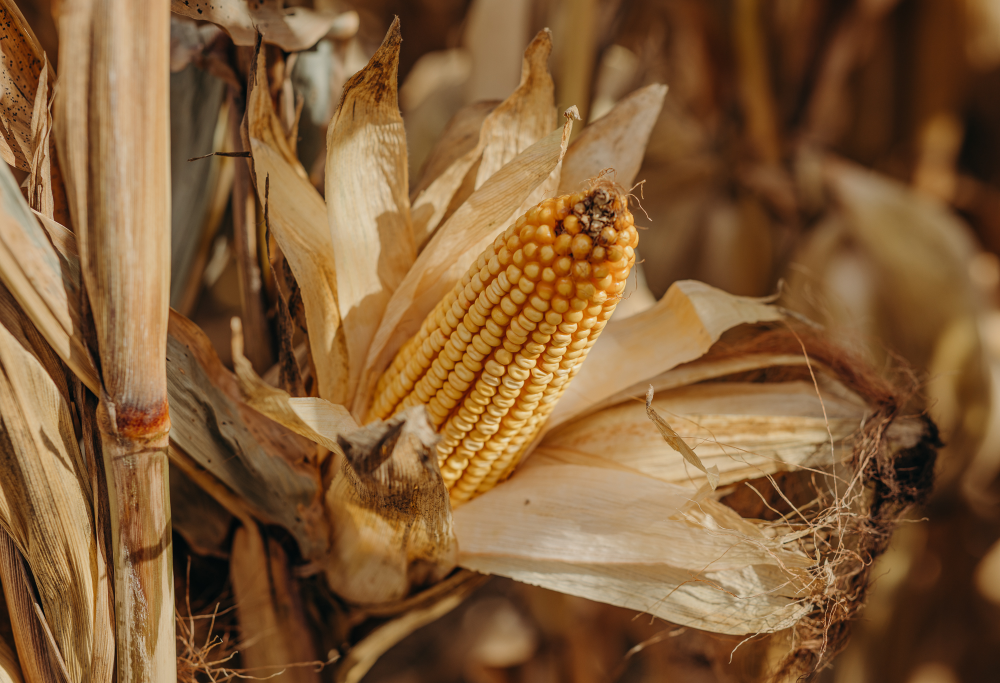
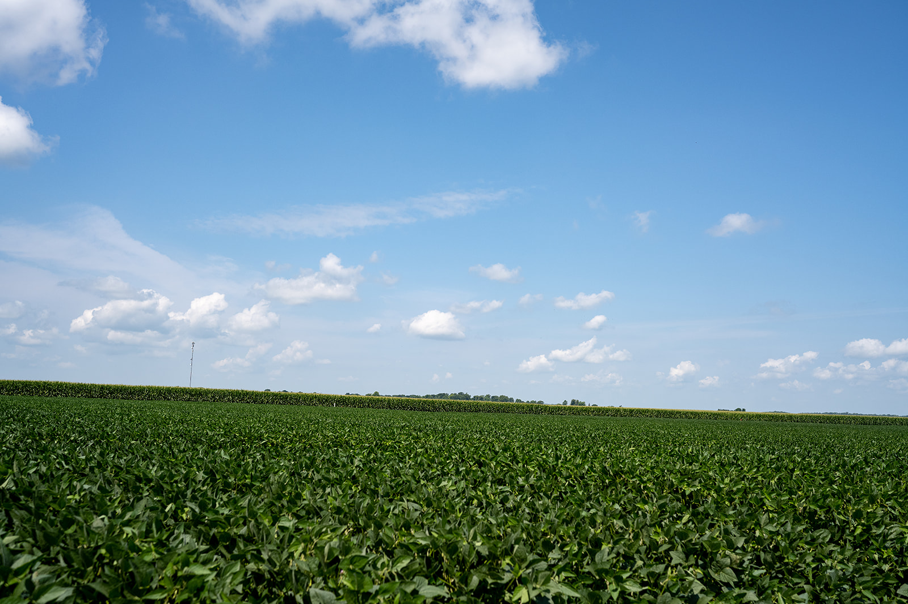

Corn
Corn
Independent seed guidance
Seed decisions built for your ground.
Domnick Seeds helps growers choose corn, soybean, forage, and cover crop options with practical local support before, during, and after planting.

Now planning
2027 seed needs
Early conversations help match genetics, traits, and field-by-field goals.
Local fields
Recommendations shaped by regional conditions
Seed-first support
Product selection, placement, and in-season follow up
Grower relationships
Responsive help from planning through harvest
Seed lineup
Products selected for performance and fit.
Build the final product list around the brands and hybrids Domnick Seeds carries. This layout is ready for specific maturities, traits, seed treatments, and availability notes.
Corn
 Soybeans
Soybeans
Varieties matched to maturity, soil type, and weed pressure.
 Forage
Forage
Options for hay, pasture, silage, and mixed feed systems.
 Cover crops
Cover crops
Blends that support soil structure, residue, and rotation goals.
Services
Advice that stays useful after the sale.
Seed placement
Match products to soil, drainage, rotation, disease history, and yield goals.
Season planning
Talk through acres, timing, treatment needs, and delivery windows early.
Field follow up
Keep an eye on emergence, stand quality, and product performance.
Field advice
Planning prompts shaped by Bayer Crop Science agronomy themes.
Use product data, field history, and local scouting together. These prompts are meant to guide a conversation before seed, fertility, biological, or chemistry decisions are made.
Match genetics to the acre.
Compare soil type, drainage, rotation, disease pressure, and yield goals before choosing corn hybrids or soybean varieties.
Let field zones guide rates.
Use zone or grid data to plan variable-rate seeding, fertility, and in-furrow decisions where field variability is meaningful.
Scout before fungicide decisions.
Consider crop stage, hybrid or variety tolerance, weather, and disease risk when evaluating fungicide timing.
Review the plan after harvest.
Compare product performance, field notes, and harvest results so next season's seed and chemistry plan starts with better context.
Hybrid catalog
Browse DEKALB hybrids by maturity, platform, and field fit.
Use the same hybrid set from the placement tool in a simpler catalog format. Bag art is matched to Bayer's DEKALB catalog imagery where available.
Loading hybrids
Source note:
Built from the 2027 DEKALB MN placement, characteristics, and
fungicide response screenshots plus Bayer's public DEKALB catalog
bag imagery. Confirm final seed placement and availability locally.
Current season
Start with your acres. We will help sort the options.
From the field
Built around real acres, real seasons, and practical decisions.



Contact
Ready to talk seed?
Reach out to Domnick Seeds to talk through seed, crop nutrition, sampling, spraying, scripting, or chemistry needs for the season.
Call: 320-589-4021
tony@domnickseeds.com
26312 500th Ave, Morris, MN 56267
Serving local growers from planning to harvest